State-space Modeling of A. Salmon Life Cycle Model
state-space-modeling-of-a-salmon-life-cycle-model.Rmd
library(hbm4ecology)
library(rjags)
library(posterior)
library(tidyverse)
library(bayesplot)
plot_theme <- theme_classic(base_size = 15L) +
theme(axis.text.x = element_text(angle = 90),
strip.background = element_rect(fill = "#4da598"),
strip.text = element_text(size = 15))Motivation and context
We illustrate the flexibility of the Bayesian state-space modeling approach for stage-structured population dynamics models fitted to series of sequential observations of different nature. The example is inspired from Rivot et al. (2004).
The method is applied to a fully stage-structured model for the Atlantic salmon life cycle with multiple life histories. The model describes the dynamics of the numbers of individuals at various life stages, with a discrete annual time step. It includes nonlinear regulation and has a probabilistic structure accommodating for both environmental and demographic stochasticity. The model is fitted to a dataset resulting from the comprehensive survey of the salmon population of the Oir River (Lower Normandy, France) between 1984 and 2001. Observation models are constructed to relate the field data to the hidden states at the various life stages. The observation process corresponds essentially to capture-mark-recapture (CMR) experiments for the evaluation of migrating juvenile and spawner runs and random sampling for demographic features.
We take into consideration a detailed description of A. salmon life histories: fish from the two smolt age classes (1+ Smolts and 2+ Smolts) can either spend one or two winters at sea (1SW and 2SW in the following) before returning as spawners. One and two sea winter spawners resulting from 1+ Smolts are denoted \(Sp11\) and \(Sp12\), respectively, and those issued from 2+ Smolts are denoted \(Sp21\) and \(Sp22\), respectively. Both \(Sp11\) and \(Sp21\) are 1SW fish but with different smolt-ages, and \(Sp12\) and \(Sp22\) are 2SW fish with different smolt-ages.

Figure 1 – Atlantic salmon life cycle model including the four main life histories encountered in French populations. Eggs spawned at year t give rise to spawners Sp11 returning year t+3. Sp12 and Sp21 returning year t+4 and Sp22 returning year t+5.
Modeling
Here we adopt a slightly simplified model than the one described in the corresponding chapter of the book (Chap. 11.3, Parent and Prévost (2013)).
Process equations describing the hidden population dynamics
- Spawner –> Eggs
- The number of eggs laid by female in year \(t\) is a deterministic function of the number of spawners, the proportion of females and the fecondity rate: \[ W_t = (Sp11_t + Sp21t - y^{Sp}_{2,t}) \times pf_{1,t} \times fec_1 + (Sp12_t + Sp22t - y^{Sp}_{3,t}) \times pf_{2,t} \times fec_2\] with the following distributions:
- \(y^2_{Sp}\) and \(y^3_{Sp}\) are known number of fish removed.
- \(Sp21_{t=1} \sim Uniform(1, 50)\) spawners issued from 1+ smolts
- \(Sp12_{t=1} \sim Uniform(1, 50)\) spawners issued from 2+ smolts
- \(fec_1\) and \(fec_2\) are the mean fecondity of female which is known and constant over time
- \(pf_{1,t}\) and \(pf_{2,t}\) are the proportion of female among 1SW and 2SW fish.
- Eggs –> 0+ juveniles
We model this with a density dependent Ricker relationship, with lognormal error to represent the environmental variability: \[ 0+_{t+1}^* \sim Normal(\log(W_t^* \times \alpha \times e^{-\beta\times W_{t}^*}), \sigma^2) \] \(0+_{t}^* = 0+_t/h\) and \(W_{t}^* = W_t/h\) are standardized by the surface area of habitat available for juveniles production \(h = 25229m^2\). And we give the following prior distributions:
- \(\log(\alpha) \sim Uniform(-10,10)\)
- \(\beta \sim Normal (0,100)\)
- \(\log (\sigma^2) \sim Uniform(-20,20)\)
- 0+ juveniles –> Smolts
The juveniles \(0+_{t+1}\) will survive to next spring as pre-smolts \(PSm_{t+2}\) with probability \(\gamma_{0+}\). Here, we use an approximation of \(PSm_{t+2} \sim Binomial(0+_{t+1}, \gamma_{0+}\) by saying that a fixed rate \(\gamma_{0+}\) of juveniles will survive. We will make a similar approximation for all the survival and migration steps.
- \(PSm_{t+2} = \gamma_{0+}\times 0+_{t+1}\)
- \(\gamma_{0+} \sim Beta(15, 15)\)
Among pre-smolts a proportion \(\theta_{Sm1, t+2}\) will migrate as \(1+\) Smolts while the remaining will stay an additional year as \(1+\) Parrs, which will survive and migrate next year with probability \(\gamma_{parr1}\). Again we use a deterministic approximation for the binomial:
- \(Sm1_{t+2} = PSm_{t+2} \times \theta_{Sm1, t+2}\)
- \(Parr1_{t+2} = PSm_{t+2} - Sm1_{t+2}\)
- \(Sm2_{t+3} = Parr1_{t+2} \times \gamma_{parr1}\)
- Smolts –> Returning spawners
A proportion \(\gamma_{Sm1, t+2}\) of 1+ Smolts will survive the first winter at sea and will become post-smolts. Then among these post-smolts, a proportion \(\theta_{m1}\) will mature as sea-winter fish \(Sp11\) the next summer, while the rest will not mature this year (\(Res1\)).
- \(PostSm1_{t+3} = Sm1_{t+2} \times \gamma_{Sm1, t+2}\)
- \(Sp11_{t+3} = PostSm1_{t+3} \times \theta_{m1}\)
- \(Res1_{t+3} = PostSm1_{t+3} - Sp11_{t+3}\)
Also for year \(t +4\):
- \(Sp12_{t+4} = Res1_{t+3} \times \gamma_{res}\)
- \(PostSm2_{t+4} = Sm2_{t+2} \times \gamma_{Sm2, t+3}\)
- \(Sp21_{t+4} = PostSm2_{t+4} \times \theta_{m1}\)
- \(Res2_{t+4} = PostSm2_{t+4} - Sp21_{t+4}\)
and year \(t + 5\):
- \(SP22_{t+5} = Res2_{t+4} \times \gamma_{res}\)
Finally the number of spawners in year \(t\) is obtained by the mass balance equation: \[Sp_t = Sp11_t + Sp12_t + Sp21_t + Sp22_t\]
Initial state variable
We give the following prior distribution at \(t=1\) for the fish population at different stages of the life cycle:
- \(0+_{t=1}^* \sim Uniform(0,1)\)
- \(PSm_{t=1} \sim Uniform(1,10000)\)
- \(Sm2_{t=1} \sim Uniform(0,300)\)
- \(PostSm1_{t=1} \sim Uniform(0,1000)\)
- \(PostSm2_{t=1} \sim Uniform(0,1000)\)
- \(Sp12_{t=1}^* \sim Uniform(0,100)\)
- \(Sp21_{t=1}^* \sim Uniform(0,50)\)
Modeling the priors on vital rates trough an exchangeable hierarchical structures
The model encompasses both demographic and environmental stochasticity by allowing an interannual random variability of the proportion of smolts migrating as 1+ Smolts and the marine survival rate of post-smolts. Interannual random variations are modeled through an exchangeable hierarchical structure (gelman+2004?), by assuming that the parameters of all years \(t\) are randomly drawn from the same probability distribution conditioned by unknown parameters common to all years. Hierarchical structures allow to probabilistically share information among the different years and can improve the estimation of key parameters ((McAllister+2004?); (MichielsenMcAllister04?); (RivotPrevost02?)). Here, an exchangeable hierarchical structure is used to mimic a between-year variability that is assumed to be random, without any particular time trends or covariates (i.e., climate) to explain the variations.
An exchangeable hierarchical structure is used to capture the between-year variability of the probability for a pre-smolt to smoltify as 1+ smolt. The \(logit\)-transform of the \(\theta_{Sm1,t}\)’s are a priori drawn in a Normal distribution with mean and variance parameters \(\phi_{1}=(\mu_{\theta_{Sm1}},\sigma_{\theta_{Sm1}})\) shared between years. The \(\theta_{Sm1,t}\)’s are then calculated by the inverse transformation \(logit^{-1}\):
- \(logit(\theta_{Sm1,t}) \sim Normal(\mu_{\theta_{Sm1}},\sigma_{\theta_{Sm1}})\)
The same procedure was applied for the survival rate of one year river-aged post-smolts, \(\gamma_{Sm1,t}\). The survival rates of two year river-aged post-smolts, \(\gamma_{Sm2,t}\), are defined based on the reasonable a priori constraint that the survival rate of two year river-aged post-smolts is always greater than for one year river-aged post-smolts, but with the same time variations. This constraint is specified in the \(logit\) scale.
- \(logit(\gamma_{Sm1,t}) \; \sim \; Normal(\mu_{\gamma_{Sm1}},\sigma_{\gamma_{Sm1}})\)
- \(logit(\gamma_{Sm2,t}) \; = \; logit(\gamma_{Sm1,t}) + \delta_{\gamma}\), \(\delta_{\gamma} \geq 0\)
Finally, the \(logit\)-transform of the proportions of females in 1SW and 2SW fish, \(pf1_{t}\) and \(pf2_{t}\) are a priori independently drawn in Normal distributions with mean and variance parameters shared between years:
- \(logit(pf1_{t}) \; \sim \; Normal(\mu_{pf1},\sigma_{pf1})\)
- \(logit(pf2_{t}) \; \sim \; Normal(\mu_{pf2},\sigma_{pf2})\)
Informative beta distributions based on prior ecological expertise are set for \(\gamma_{0+}\) (survival rates of 0+ Juveniles) and \(\gamma_{Parr1}\) (survival rate of 1+ Parrs), with mean \(0.5\) and \(0.66\), respectively. All the remaining parameters of the population dynamics are considered constant over time with rather diffuse prior distribution.
Where we give the following prior distributions:
We give the following prior distributions for the survival and migration rates:
- \(\theta_{m1} \sim Beta(3,2)\)
- \(\gamma_{res} \sim Beta(3,2)\)
- \(\gamma_{parr1} \sim Beta(20,10)\)
- \(\mu_{\theta_{Sm1}} \sim Uniform(0, 100)\) and \(\sigma_{\theta_{Sm1}} \sim Uniform(0, 5)\)
- \(\mu_{\theta_{Sm1}} \sim Uniform(0, 100)\) and \(\sigma_{\theta_{Sm1}} \sim Uniform(0, 5)\)
- \(\mu_{pf1} \sim Normal(0,100)\) and \(\sigma_{pf1} \sim Uniform(0,5)\)
- \(\mu_{pf1} \sim Normal(0,100)\) and \(\sigma_{pf2} \sim Uniform(0,5)\)

Figure 2 – DAG of the hidden dynamics for the Atlantic salmon life cycle including the observation process on both the smolt and spaner runs.
Data and observation equations
Let first have a glimpse of the data:
glimpse(SalmonLifeCycle)
#> List of 25
#> $ n : num 18
#> $ surf : num 25229
#> $ fec1 : num 4635
#> $ fec2 : num 7965
#> $ Year : int [1:18] 1984 1985 1986 1987 1988 1989 1990 1991 1992 1993 ...
#> $ c_Sp : num [1:18] 167 264 130 16 226 235 15 44 31 100 ...
#> $ x_Sp1 : num [1:18] 10 37 28 3 35 31 4 0 10 17 ...
#> $ x_Sp2 : num [1:18] 3 11 9 1 8 5 4 0 1 2 ...
#> $ mad : num [1:18] 154 216 93 12 183 199 7 44 20 81 ...
#> $ rmad : num [1:18] 12 21 5 2 12 56 2 23 4 4 ...
#> $ r_unm : num [1:18] 10 4 4 22 0 0 15 1 5 3 ...
#> $ sample_Sp_age : num [1:18] 159 211 111 16 197 220 9 41 28 98 ...
#> $ sample_Sp11 : num [1:18] 113 116 61 13 85 129 3 38 22 85 ...
#> $ sample_Sp21 : num [1:18] 20 50 19 2 74 54 2 1 4 6 ...
#> $ sample_Sp12 : num [1:18] 23 43 24 1 36 31 3 1 2 7 ...
#> $ sample_Sp22 : num [1:18] 3 2 7 0 2 6 1 1 0 0 ...
#> $ sample_Sp1_sex: num [1:18] 141 203 93 15 182 197 9 42 28 93 ...
#> $ sample_Sp2_sex: num [1:18] 26 61 37 1 44 38 6 2 3 7 ...
#> $ sample_Sp1f : num [1:18] 40 69 31 1 63 64 3 13 11 22 ...
#> $ sample_Sp2f : num [1:18] 21 42 26 1 31 21 4 1 2 3 ...
#> $ c_Sm : num [1:18] NA 439 887 283 307 553 746 151 580 209 ...
#> $ sample_Sm_age : num [1:18] 1 439 887 283 307 553 746 151 580 209 ...
#> $ sample_Sm1 : num [1:18] NA 232 848 146 282 495 708 101 571 171 ...
#> $ m_Sm : num [1:18] 86 86 135 31 59 65 38 35 50 26 ...
#> $ r_Sm : num [1:18] NA NA 91 24 43 43 35 27 43 24 ...Capture-mark-recapture and sampling data for smolts at the downstream trap by migration year (\(y_i^{Sm}\), \(i = 1, \dots, 5)\):
| Year | c_Sm | sample_Sm_age | sample_Sm1 | m_Sm | r_Sm |
|---|---|---|---|---|---|
| 1984 | NA | 1 | NA | 86 | NA |
| 1985 | 439 | 439 | 232 | 86 | NA |
| 1986 | 887 | 887 | 848 | 135 | 91 |
| 1987 | 283 | 283 | 146 | 31 | 24 |
| 1988 | 307 | 307 | 282 | 59 | 43 |
| 1989 | 553 | 553 | 495 | 65 | 43 |
| 1990 | 746 | 746 | 708 | 38 | 35 |
| 1991 | 151 | 151 | 101 | 35 | 27 |
| 1992 | 580 | 580 | 571 | 50 | 43 |
| 1993 | 209 | 209 | 171 | 26 | 24 |
| 1994 | 329 | 329 | 323 | 17 | 10 |
| 1995 | 618 | 618 | 541 | 63 | 53 |
| 1996 | 767 | 767 | 684 | 76 | 58 |
| 1997 | 205 | 205 | 186 | 63 | 31 |
| 1998 | 511 | 511 | 438 | 91 | 44 |
| 1999 | 195 | 195 | 43 | 59 | 45 |
| 2000 | 1849 | 1849 | 1835 | 300 | 232 |
| 2001 | 688 | 688 | 636 | 264 | 123 |
Capture-mark-recapture and sampling data for spawners at the upstream trap by migration year (\(y_i^{S}\), \(i = 1, \dots, 6)\):
| Year | c_Sp | x_Sp1 | x_Sp2 | mad | rmad | r_unm |
|---|---|---|---|---|---|---|
| 1984 | 167 | 10 | 3 | 154 | 12 | 10 |
| 1985 | 264 | 37 | 11 | 216 | 21 | 4 |
| 1986 | 130 | 28 | 9 | 93 | 5 | 4 |
| 1987 | 16 | 3 | 1 | 12 | 2 | 22 |
| 1988 | 226 | 35 | 8 | 183 | 12 | 0 |
| 1989 | 235 | 31 | 5 | 199 | 56 | 0 |
| 1990 | 15 | 4 | 4 | 7 | 2 | 15 |
| 1991 | 44 | 0 | 0 | 44 | 23 | 1 |
| 1992 | 31 | 10 | 1 | 20 | 4 | 5 |
| 1993 | 100 | 17 | 2 | 81 | 4 | 3 |
| 1994 | 32 | 12 | 2 | 18 | 1 | 4 |
| 1995 | 109 | 6 | 1 | 102 | 39 | 7 |
| 1996 | 70 | 13 | 2 | 55 | 25 | 57 |
| 1997 | 56 | 19 | 3 | 34 | 12 | 3 |
| 1998 | 34 | 3 | 1 | 30 | 6 | 30 |
| 1999 | 154 | 5 | 1 | 148 | 13 | 22 |
| 2000 | 53 | 0 | 0 | 53 | 4 | 33 |
| 2001 | 160 | 1 | 0 | 159 | 31 | 4 |
Capture-mark-recapture and sampling data for spawners at the upstream trap by migration year (\(y_i^{S}\), \(i = 7, \dots, 15)\) (continued):
| Year | sample_Sp_age | sample_Sp11 | sample_Sp21 | sample_Sp12 | sample_Sp22 | sample_Sp1_sex | sample_Sp2_sex | sample_Sp1f | sample_Sp2f |
|---|---|---|---|---|---|---|---|---|---|
| 1984 | 159 | 113 | 20 | 23 | 3 | 141 | 26 | 40 | 21 |
| 1985 | 211 | 116 | 50 | 43 | 2 | 203 | 61 | 69 | 42 |
| 1986 | 111 | 61 | 19 | 24 | 7 | 93 | 37 | 31 | 26 |
| 1987 | 16 | 13 | 2 | 1 | 0 | 15 | 1 | 1 | 1 |
| 1988 | 197 | 85 | 74 | 36 | 2 | 182 | 44 | 63 | 31 |
| 1989 | 220 | 129 | 54 | 31 | 6 | 197 | 38 | 64 | 21 |
| 1990 | 9 | 3 | 2 | 3 | 1 | 9 | 6 | 3 | 4 |
| 1991 | 41 | 38 | 1 | 1 | 1 | 42 | 2 | 13 | 1 |
| 1992 | 28 | 22 | 4 | 2 | 0 | 28 | 3 | 11 | 2 |
| 1993 | 98 | 85 | 6 | 7 | 0 | 93 | 7 | 22 | 3 |
| 1994 | 29 | 24 | 3 | 2 | 0 | 30 | 2 | 18 | 2 |
| 1995 | 108 | 88 | 17 | 3 | 0 | 106 | 3 | 45 | 3 |
| 1996 | 60 | 48 | 9 | 2 | 1 | 67 | 3 | 27 | 3 |
| 1997 | 52 | 47 | 4 | 1 | 0 | 55 | 1 | 21 | 1 |
| 1998 | 28 | 22 | 5 | 1 | 0 | 33 | 1 | 10 | 1 |
| 1999 | 140 | 105 | 18 | 12 | 5 | 136 | 18 | 43 | 13 |
| 2000 | 51 | 45 | 2 | 2 | 2 | 49 | 4 | 26 | 2 |
| 2001 | 140 | 120 | 14 | 5 | 1 | 151 | 9 | 51 | 3 |
The observations (1984 - 2001) have been gathered under an homogeneous experimental design and few data are missing. Each annual survey provides two complementary sources of information, the number of smolts and spawners in each annual run, and the demographic structure (age classes and sex-ratio) in smolts and adult runs.
Updating the population size at the various life stages
Available information to estimate the size of smolt and spawner runs does not distinguish between the age classes. For both the smolts and the spawners, a proportion of the migrating population is captured at a partial counting fence and marked for further recapture. CMR experiments provide data to update the total number of smolts migrating in year \(t\), \(Sm_{t} = Sm1_{t}+Sm2_{t}\), and the total number of spawners returning in year \(t\), \(Sp_{t}=Sp11_{t}+Sp12_{t}+Sp21_{t}+Sp22_{t}\).
Smolt run
Figure 3 – Schame of the Cerisel trapping facility (Oir river, Normandy, France) working as a double downstream (for smolt runs) and upstream (for spawner runs) partial counting fence. The black circles at the top of the figure indicates the release site of tagged smolts and spawners. The release site and the downstream trap are 1 km away from each other.
CMR experiments for smolts are analogous to the two-stage Petersen experiment (). For each year \(t\) between 1986 and 2001, let us denote \(y_{1,t}^{Sm}\) the number of smolts caught in the downstream trapping facility during the migration time. Among the \(y_{1,t}^{Sm}\) smolts captured, a number \(y_{2,t}^{Sm}\) have been tagged and released upstream from the trapping facility used for capture. Some of these tagged and released smolts, denoted \(y_{3,t}^{Sm}\) (\(y_{3,t}^{Sm}<y_{2,t}% ^{Sm}\)), will be recaptured at the same downstream trap. The capture and recapture data for each year \(t\) can be modeled by two successive Binomial distributions with the same capture probabilities \(\pi_{t}^{Sm}\) (interpreted as the trapping efficiency that may vary between years):
- \(y^{Sm}_{1,t} \; \sim \; Binomial(Sm_{t},\pi^{Sm}_{t})\)
- \(y^{Sm}_{3,t} \; \sim \; Binomial(y^{Sm}_{2,t},\pi^{Sm}_{t})\)
Intuitively, the second Binomial equation will contribute to specify the trapping efficiency \(\pi_{Sm,t}\), while the first one brings information to update the total number of downstream migrating smolts \(Sm_{t}\).
Spawner run
Conversely to smolts, CMR experiments for spawners cannot be assimilated to a simple Petersen experiment. For each year \(t\) from \(1984\) to \(2001\), \(y_{1,t}^{Sp}\) denotes the number of fish trapped at the counting fence. Among these \(y_{1,t}^{Sp}\) fish, \(y_{2,t}^{Sp}\) one sea-winter and \(y_{3,t}^{Sp}\) two sea-winter fish are removed from the population. A number \(y_{4,t}% ^{Sp}=y_{1,t}^{Sp}-(y_{2,t}^{Sp}+y_{3,t}^{Sp})\) of fish are tagged and released upstream from the trap. The recapture sample is gathered during and after spawning by three methods (electrofishing on the spawning grounds, collection of dead fish after spawning, and trapping of spent fish at the downstream trap). Let us denote as \(y_{5,t}^{Sp}\) and \(y_{6,t}^{Sp}\) the number of marked and unmarked fish among recaptured fish, respectively.
- \(y^{Sp}_{1,t} \; \sim \; Binomial(Sp_{t},\pi^{Sp,1}_{t})\)
- \(y^{Sp}_{5,t} \; \sim \; Binomial(y^{Sp}_{4,t},\pi^{Sp,2}_{t})\)
- \(y^{Sp}_{6,t} \; \sim \; Binomial(Sp_{t}-y^{Sp}_{1,t},\pi^{Sp,2}_{t})\)
The reasoning underlying how the information contained in the data is used in the three lines is as follows: the second line essentially conveys information to estimate the recapture probability \(\pi _{t}^{Sp,2}\). Both the third and the first line carry information on the total number of spawners \(Sp_{t}\).
Hierarchical prior on the trapping efficiencies
The between-year variability of the probabilities of capture \(\pi_{t}^{Sm}\), \(\pi_{t}^{Sp,1}\) and \(\pi_{t}^{Sp,2}\) is modeled through exchangeable hierarchical structures with hyper-parameters denoted \(\phi_{Sm}\), \(\phi_{Sp,1}\) and \(\phi_{Sp,2}\) respectively. Instead of drawing the \(\pi\)’s in beta distributions, the \(logit\)-transform of the \(\pi\)’s are drawn from Normal distributions with mean and variance parameters shared between years. The \(\pi\)’s are then calculated by the inverse transformation \(logit^{-1}\).
-
\(logit(\pi^{Sm}_{t}) \; \sim \;
Normal(\mu_{\pi_{Sm}},\sigma_{\pi_{Sm}})\)
- \(logit(\pi^{Sp,1}_{t}) \; \sim \; Normal(\mu_{\pi_{Sp,1}},\sigma_{\pi_{Sp,1}})\)
- \(logit(\pi^{Sp,2}_{t}) \; \sim \; Normal(\mu_{\pi_{Sp,2}},\sigma_{\pi_{Sp,2}})\)
We set diffuse prior distribution on the parameters of the Normal distributions:
- \(\mu_{\pi_{Sm}} \sim Normal(0,100)\) and \(\sigma_{\pi_{Sm}} \sim Uniform(0,5)\)
- \(\mu_{\pi_{Sp,1}} \sim Normal(0,100)\) and \(\sigma_{\pi_{Sp,1}} \sim Uniform(0,5)\)
- \(\mu_{\pi_{Sp,2}} \sim Normal(0,100)\) and \(\sigma_{\pi_{Sp,2}} \sim Uniform(0,5)\)
Updating the demographic structure
In addition to the CMR data, sampling among the fish caught at the trap enables us to update the yearly proportions of the age classes in the smolt and spawner runs \(Sm_{t}\) and \(Sp_{t}\), and the mean sex ratio in the spawner run. For each demographic feature, sampling is modeled by independent Binomial or multinomial processes.
River age in smolt run
\(y^{Sm}_{4,t}\) denotes the sample size of smolts examined for river-age in the run of year \(t\) and \(y^{Sm}_{5}\) is the number of 1+ Smolts among them. The proportion of 1+ Smolts in year \(t\), denoted \(\rho_{Sm1,t}\) is updated by modeling \(y^{Sm}_{5}\) as the result of a Binomial sampling with a sample size \(y^{Sm}_{4,t}\) and a probability \(\rho_{Sm1,t}\):
- \(\rho_{Sm1,t} = \frac{Sm1_{t}}{Sm1_{t} + Sm2_{t}}\)
- \(y^{Sm}_{5,t} \; \sim \; Binomial(y^{Sm}_{4,t},\rho_{Sm1,t})\)
Sea and River-age in spawner run
\(y_{7,t}^{Sp}\) denotes the sample size of spawners examined for sea and river-age in the run of year \(t\). \(y_{8,t}^{Sp}\) and \(y_{9,t}^{Sp}\) are the number of 1SW fish resulting from 1+ and 2+ Smolts, respectively among \(y_{7,t}^{Sp}\), and \(y_{10,t}^{Sp}\) and \(y_{11,t}^{Sp}\) are the number of 2SW fish issued from 1+ and 2+ Smolts, respectively among \(y_{7,t}^{Sp}\). The proportions of the four different age classes in each spawning run (summing to \(1\)) are updated through a multinomial model:
- $ _{Sp,t} = ( , , , )$
- \((y^{Sp}_{8,t},y^{Sp}_{9,t},y^{Sp}_{10,t},y^{Sp}_{11,t}) \; \sim \; Multinomial(y^{Sp}_{7,t},\rho_{Sp,t})\)
Sex ratio in spawner run
Sex-ratio in spawner runs are updated each year \(t\) through Binomial sampling experiments considered independent for one and two sea-winter fish. Each year \(t\), \(y^{Sp}_{12,t}\) 1SW fish (resp. \(y^{Sp}_{14,t}\) 2SW fish) are examined for sex identification and \(y^{Sp}_{13,t}\) (resp. \(y^{Sp}_{15,t}\)) are identified as females among them. Proportion of females in the two sea-age classes \(pf_{1,t}\) and \(pf_{2,t}\) are updated through Binomial sampling:
- $ y^{Sp}{13,t} Binomial(y^{Sp}{12,t},pf_{1,t})$
- $ y^{Sp}{14,t} Binomial(y^{Sp}{15,t},pf_{2,t})$
Model estimation
We will remove the data from 1984 and 1985 as there are missing data
(NA).
data <- SalmonLifeCycle
data$n <- 16
data[c(5:25)] <- bind_cols(SalmonLifeCycle[c(5:25)]) %>% filter(Year >= 1986) %>% as.list()
data$sample_Sp <- bind_cols(data[13:16])
model_str <- "
model {
# ---------------------------------------------------------------------------
# PRIORS
# ---------------------------------------------------------------------------
# Priors for Ricker stock-recruitmnt parameters
# R = alpha*exp(-beta*S)
# alpha constrained <1 becasue it is a survival rate eggs --> 0+
log.alpha ~ dunif(-10,0)
alpha <- exp(log.alpha)
beta ~ dnorm(0,0.01)
exp.beta <- exp(beta)
# Prior for recruitment process error variance
# (Corresponds to approximative 1/V between 1E-6 and 1E+6)
log.sigma_2 ~ dunif(-13.8,13.8)
sigma_2 <- exp(log.sigma_2)
tau <- 1/sigma_2
# Survival rate Juveniles 0+ --> Pre-smolts1 (constant between years)
s01 ~ dbeta(15,15)
# Life history choice - probability to migrate as Smolt 1
# (exchangeable hierarchical structure between years)
mu_theta_Sm1 ~ dnorm(0,0.01)
sd_theta_Sm1 ~ dunif(0,5)
tau_theta_Sm1 <- 1/(sd_theta_Sm1*sd_theta_Sm1)
# Indice [n+1] is the predictive
for( i in 1:(n+1) ) {
logit_theta_Sm1[i] ~ dnorm(mu_theta_Sm1,tau_theta_Sm1)
logit(theta_Sm1[i]) <- logit_theta_Sm1[i] }
# Survival rate Parr 1+ resident --> Smolts 2 (constant between years)
s12 ~ dbeta(20,10)
# Transition Smolt1 --> post-smolts (survival during the first year at sea)
# (exchangeable hierarchical structure between years)
mu_ss11 ~ dnorm(0,0.01)
sd_ss11 ~ dunif(0,5)
tau_ss11 <- 1/(sd_ss11*sd_ss11)
# Indice [n+1] is the predictive
for( i in 1 : (n+1) ) {
logit_ss11[i] ~ dnorm(mu_ss11,tau_ss11)
logit(ss11[i]) <- logit_ss11[i]
logit(ss21[i]) <- logit_ss11[i] + delta_ss1 }
# Differential in survival rate between Sm1 and Sm2 (constant between years)
# logit(ss21) = logit(ss11) + delta_ss1
delta_ss1 ~ dunif(0,10)
# Proportion of maturing adults as 1SW (constant between years)
theta_m1 ~ dbeta(3,2)
# Marine survival rate for non maturing 1SW post-smolts
# Survival probability is the same for non maturing post.smolts1 and post.smolts2
# (ss12 = ss22) and constant accross year
ss2 ~ dbeta(3,2)
# Proportion of females pf1 and pf2 (exchangeable hierarchical structure between years)
mu_pf1 ~ dnorm(0,0.01)
sd_pf1 ~ dunif(0,5)
tau_pf1 <- 1/(sd_pf1*sd_pf1)
mu_pf2 ~ dnorm(0,0.01)
sd_pf2 ~ dunif(0,5)
tau_pf2 <- 1/(sd_pf2*sd_pf2)
# Indice [n+1] is the predictive
for( i in 1 : (n+1) ) {
logit_pf1[i] ~ dnorm(mu_pf1,tau_pf1)
logit(pf1[i]) <- logit_pf1[i]
logit_pf2[i] ~ dnorm(mu_pf2,tau_pf2)
logit(pf2[i]) <- logit_pf2[i] }
# Trapping efficiencies (exchangeable hierarchical structure between years)
# Smolts
mu_pi_sm ~ dnorm(0,0.01)
sd_pi_sm ~ dunif(0,5)
tau_pi_sm <- 1/(sd_pi_sm*sd_pi_sm)
# Adults
mu_pi_sp1 ~ dnorm(0,0.01)
sd_pi_sp1 ~ dunif(0,5)
tau_pi_sp1 <- 1/(sd_pi_sp1*sd_pi_sp1)
# Adults recapture efficiency
mu_pi_sp2 ~ dnorm(0,0.01)
sd_pi_sp2 ~ dunif(0,5)
tau_pi_sp2 <- 1/(sd_pi_sp2*sd_pi_sp2)
# Indice [n+1] is the predictive
for( i in 1 : (n+1) ) {
# Smolts
logit_pi_sm[i] ~ dnorm(mu_pi_sm,tau_pi_sm)
logit(pi_sm[i]) <- logit_pi_sm[i]
# Adults
logit_pi_sp1[i] ~ dnorm(mu_pi_sp1,tau_pi_sp1)
logit(pi_sp1[i]) <- logit_pi_sp1[i]
# Adults recapture efficiency
logit_pi_sp2[i] ~ dnorm(mu_pi_sp2,tau_pi_sp2)
logit(pi_sp2[i]) <- logit_pi_sp2[i] }
# ---------------------------------------------------------------------------
# PROCESS EQUATIOnS (hidden population dynamics)
# ---------------------------------------------------------------------------
# Prior on states for the first year
dSp12 <- rep(1, 100)
dSp22 <- rep(1, 50)
Sp12[1] ~ dcat(dSp12)
Sp22[1] ~ dcat(dSp22)
dSm2 <- rep(1, 300)
Sm2[1] ~ dcat(dSm2)
Jint[1] ~ dunif(0,1)
dPSm <- rep(1, 10000)
PSm[1] ~ dcat(dPSm)
dPostSm1 <- rep(1, 1000)
dPostSm2 <- rep(1, 1000)
post.smolt1[1] ~ dcat(dPostSm1)
post.smolt2[1] ~ dcat(dPostSm2)
# Loop on time series (n = 18, i = 1 is year 1984, i = n is year 2001)
for( i in 1 : n ){
Sp1[i] <- Sp11[i] + Sp21[i]
Sp2[i] <- Sp12[i] + Sp22[i]
Sp[i] <- Sp1[i] + Sp2[i]
# Stock (eggs) : number of female = marked and released + escape from the trap
# Standardized per m² of wetted production area
Eggs[i] <- max( ( (Sp1[i]-x_Sp1[i]) * pf1[i] * fec1 + (Sp2[i]-x_Sp2[i]) * pf2[i] * fec2 ) / surf, 1)
p_Eggs1[i] <- max( (Sp1[i]-x_Sp1[i]) * pf1[i] * fec1 / surf ,1) / Eggs[i]
# Ricker * Lognormal Process errors for recruitment
LogRmean[i] <- log(Eggs[i]*alpha*exp(-beta*Eggs[i]))
Jint[i+1] ~ dlnorm(LogRmean[i],tau)
J[i] <- round(Jint[i]*surf)
egg_juv_surv[i] <- Jint[i+1]/Eggs[i]
# Transition Juveniles 0+ --> pre-smolts PSm with survival s01
PSm[i+1] <- max(round(s01 * J[i]), 1)
# Transition to smolts 1+ and 2+ with life history choice theta_Sm1
# Survival of resident Parr1 = s12 gamma_Parr1
Sm1[i] <- max(round(theta_Sm1[i] * PSm[i]), 1)
Parr1[i] <- max(PSm[i] - Sm1[i],1)
Sm2[i+1] <- max(round(s12 * Parr1[i]), 1)
# Transition Smolt1 --> post-smolts (survival during the first year at sea)
post.smolt1[i+1] <- max(round(ss11[i] * Sm1[i]), 1)
post.smolt2[i+1] <- max(round(ss21[i] * Sm2[i]), 1)
# Maturation of post-smolts (1 and 2) as 1SW fish (with probability theta_m1)
# Maturing probability (theta_m1) is the same for post.smolts1 and post.smolts2
# and constant accross year
Sp11[i] <- max(round(theta_m1 * post.smolt1[i]), 1)
Sp21[i] <- max(round(theta_m1 * post.smolt2[i]), 1)
# Survival during the second year at sea
Res1[i] <- max(post.smolt1[i] - Sp11[i],1)
Sp12[i+1] <- max(round(ss2 * Res1[i]),1)
Res2[i] <- max(post.smolt2[i] - Sp21[i],1)
Sp22[i+1] <- max(round(ss2 * Res2[i]),1)
} # end of the loop on i
mean_p_Eggs1 <- mean(p_Eggs1[])
mean_egg_juv_surv <- mean(egg_juv_surv[])
# ---------------------------------------------------------------------------
# OBSERVATIOn EQUATIONS
# ---------------------------------------------------------------------------
for( i in 1 : n )
{
# Smolts
# --------------------------------
# Catches
Sm[i] <- Sm1[i]+Sm2[i]
c_Sm[i] ~ dbin(pi_sm[i],Sm[i])
# Recaptures
r_Sm[i] ~ dbin(pi_sm[i],m_Sm[i])
# Updating of river-age proportions in smolts runs
p_Sm1[i] <- Sm1[i]/(Sm1[i]+Sm2[i])
sample_Sm1[i] ~ dbin(p_Sm1[i],sample_Sm_age[i])
# Adults
# --------------------------------
# Updating total numbers
# Catches
c_Sp[i] ~ dbin(pi_sp1[i],Sp[i])
# Recaptured marked
rmad[i] ~ dbin(pi_sp2[i],mad[i])
# Recaptured unmarked (r_unm[i] among a total of escnet[i] unmarked fish)
# where escnet[i] are adults that escaped to the trap = Sp - c_Sp
escnet[i] <- Sp[i] - c_Sp[i]
r_unm[i] ~ dbin(pi_sp2[i], escnet[i])
# Updating the demographic structure
p_Sp[i,1] <- Sp11[i]/Sp[i]
p_Sp[i,2] <- Sp12[i]/Sp[i]
p_Sp[i,3] <- Sp21[i]/Sp[i]
p_Sp[i,4] <- Sp22[i]/Sp[i]
p_Sp1[i] <- Sp1[i] / Sp[i]
p_Sp11[i] <- Sp11[i] / Sp1[i]
p_Sp12[i] <- Sp12[i] / Sp2[i]
#x[i,1] <- sample_Sp11[i]
#x[i,2] <- sample_Sp12[i]
#x[i,3] <- sample_Sp21[i]
#x[i,4] <- sample_Sp22[i]
sample_Sp[i,1:4] ~ dmulti(p_Sp[i,1:4], sample_Sp_age[i])
# Updating female proportions in 1SW and 2SW
sample_Sp1f[i] ~ dbin(pf1[i],sample_Sp1_sex[i])
sample_Sp2f[i] ~ dbin(pf2[i],sample_Sp2_sex[i])
} # end of the loop on i
mean_p_Sm1 <- mean(p_Sm1[])
mean_p_Sp1 <- mean(p_Sp1[])
mean_p_Sp11 <- mean(p_Sp11[])
mean_p_Sp12 <- mean(p_Sp12[])
} # End of the model"
var_prod <- c("alpha", "beta", "sigma_2")
var_survival <- c("s01", "s12", "ss2", "ss11", "ss21")
var_migration <- c("theta_Sm1", "delta_ss1", "theta_m1")
var_female <- c("pf1", "pf2")
var_trapping <- c("pi_sm", "pi_sp1", "pi_sp2")
var_egg <- c("Eggs", "p_Eggs1`", "J", "LogRmean", "egg_juv_surv")
var_pop <- c("Jint", "PSm", "post.smolt1", "post.smolt2", # Juveniles and smolts
"Sm1", "Parr1", "Sm2", "Res1", "Sm",
"Sp11", "Sp12", "Sp21", "Sp22", "Sp1", "Sp2", "Sp", # Spawners
"mean_p_Sm1", "mean_p_Sp1", "mean_p_Sp11", "mean_p_Sp12")
inits1 <- source(file = "model_init/SalmonLifeCycle/inits1_SalmonLifeCycle.txt")$value
inits <- list(inits1, inits1, inits1)
model <- jags.model(file = textConnection(model_str),
data = data, inits = inits,
n.chains = 3)
# Inferences
update(model, n.iter = 10000)
posterior_sample <- coda.samples(
model = model,
variable.names = c("alpha", "beta", "sigma_2", # Production
"s01", "s12", "ss2", "ss11", "ss21", #Survival rate gamma
"theta_Sm1", "delta_ss1", "theta_m1", # Migration rate
"pf1", "pf2", # Proportion of female
"pi_sm", "pi_sp1", "pi_sp2", # Trapping efficiency
"Eggs", "p_Eggs1`", "J", "LogRmean", "egg_juv_surv",
"Jint", "PSm", "post.smolt1", "post.smolt2", # Juveniles and smolts
"Sm1", "Parr1", "Sm2", "Res1", "Sm",
"Sp11", "Sp12", "Sp21", "Sp22", "Sp1", "Sp2", "Sp", # Spawners
"mean_p_Sm1", "mean_p_Sp1", "mean_p_Sp11", "mean_p_Sp12"
),
n.iter = 10000,
thin = 10)
summarise_draws(as_draws_df(posterior_sample),
default_convergence_measures()) %>%
pivot_longer(-variable) %>%
ggplot(aes(x = value)) +
geom_histogram() +
facet_wrap(~ name, scales = "free") +
plot_theme
#> `stat_bin()` using `bins = 30`. Pick better value with `binwidth`.
#> Warning: Removed 6 rows containing non-finite values (stat_bin).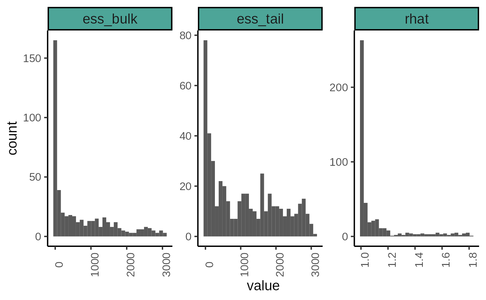
draws <- as_draws_df(posterior_sample)
mcmc_pairs(draws,
pars = c("s01", "s12", "theta_m1", "delta_ss1", "sigma_2"),
diag_fun = "dens")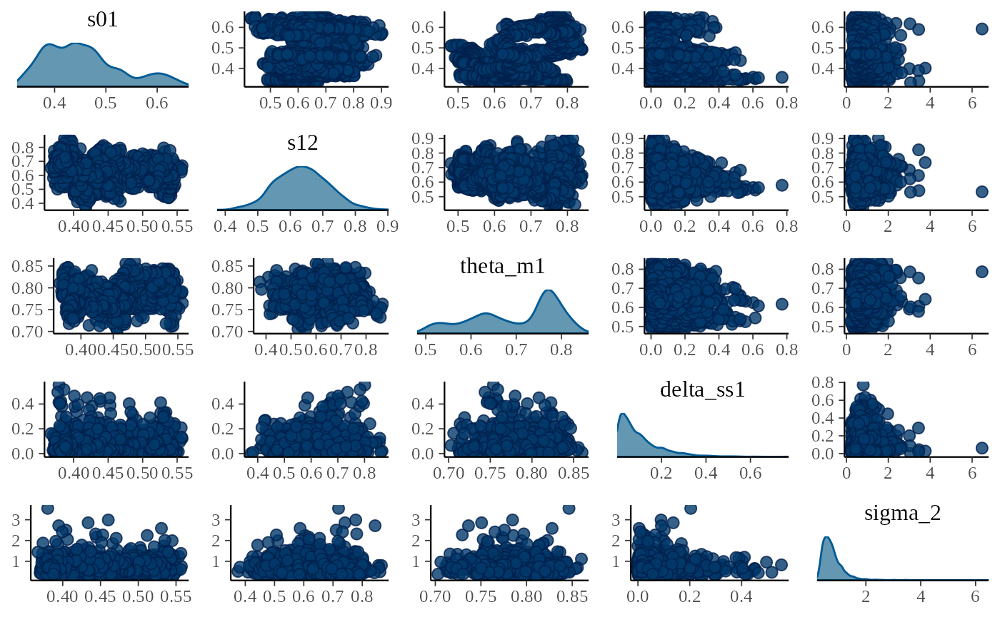
mcmc_pairs(draws, pars = c("alpha", "beta"),
diag_fun = "dens")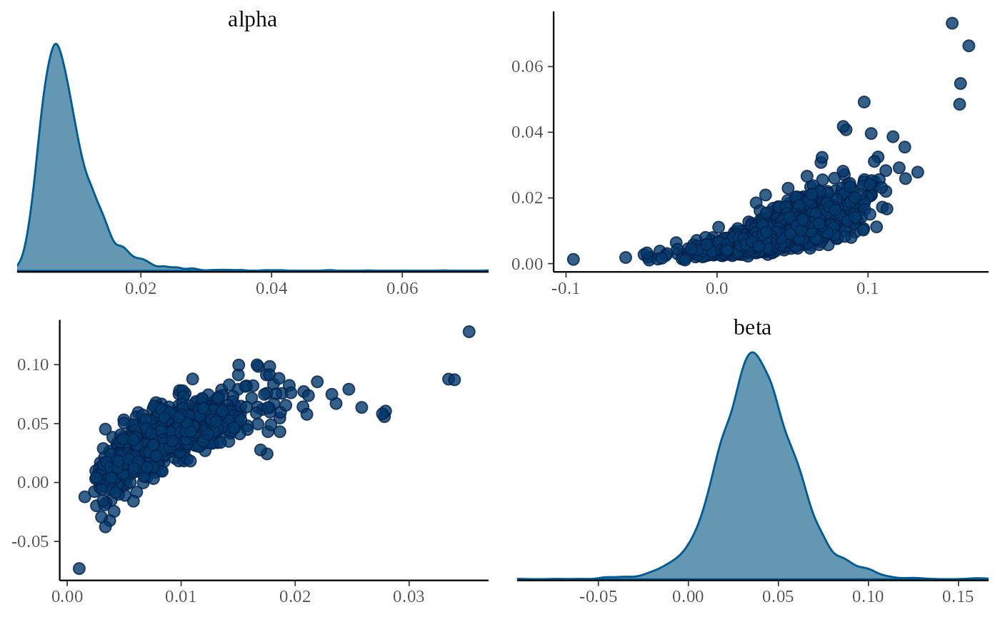
mcmc_hist(draws, pars = c("pi_sp1[1]", "pi_sp1[2]", "pi_sp1[3]",
"pi_sp1[4]", "pi_sp1[5]", "pi_sp1[6]"))
#> `stat_bin()` using `bins = 30`. Pick better value with `binwidth`.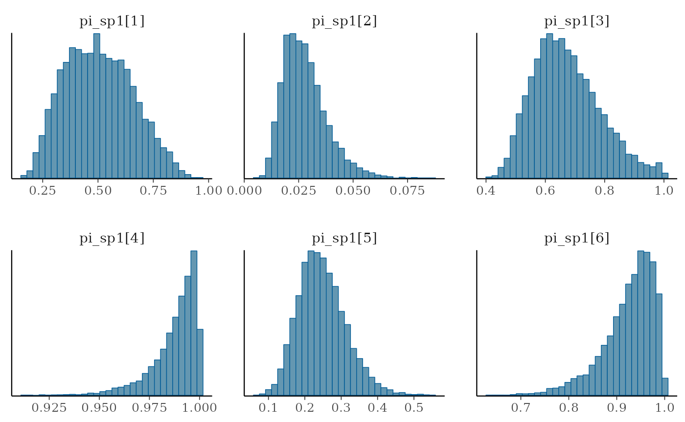
# mcmc_pairs(draws, pars = c("mu_pf1", "mu_pf2"),
# diag_fun = "dens")
dfw <- extract_wider(posterior_sample) %>%
rename()
dfl <- extract_longer(posterior_sample)
dfw %>%
select(starts_with("Sm.")) %>%
pivot_longer(cols = everything()) %>%
mutate(name = as_factor(str_sub(name, 4))) %>%
ggplot(aes(group = name, y = value, x = as.integer(name) + 1985)) +
geom_boxplot(outlier.shape = NA, width = .5, fill = "gray70") +
xlab("Years") + ylab ("Smolts (Sm)") +
ylim(0,3000) +
# scale_x_discrete(labels = as.character(seq(1986, 1986+15)),
# guide = guide_axis(angle = 90),
# breaks = seq(1986, 1986+15)) +
plot_theme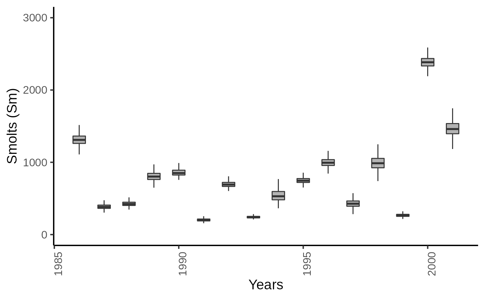
dfw %>%
select(starts_with("Sp.")) %>%
pivot_longer(cols = everything()) %>%
mutate(name = as_factor(str_sub(name, 4))) %>%
ggplot(aes(group = name, y = value, x = as.integer(name) + 1985)) +
geom_boxplot(outlier.shape = NA, width = .5, fill = "gray70") +
xlab("Years") + ylab ("Spawners (Sp)") +
# scale_x_discrete(labels = as.character(seq(1986, 1986+15)),
# guide = guide_axis(angle = 90),
# breaks = seq(1986, 1986+15)) +
plot_theme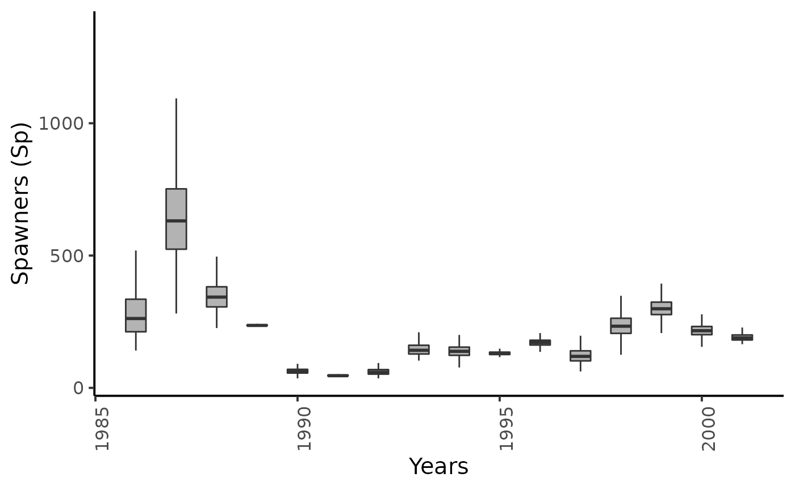
dfw %>%
select(starts_with("pi_sm.")) %>%
pivot_longer(cols = everything()) %>%
mutate(name = as_factor(str_sub(name, 4))) %>%
ggplot(aes(group = name, y = value, x = as.integer(name) + 1985)) +
geom_boxplot(outlier.shape = NA, width = .5, fill = "gray70") +
xlab("Years") + ylab ("Trapping efficiency for Smolts (pi_Sm)") +
ylim(c(0,1)) +
# scale_x_discrete(labels = as.character(seq(1984, 1984+17)),
# guide = guide_axis(angle = 90),
# breaks = seq(1984, 1984+17)) +
plot_theme
dfw %>%
select(starts_with("pi_Sp1.")) %>%
pivot_longer(cols = everything()) %>%
mutate(name = as_factor(str_sub(name, 4))) %>%
ggplot(aes(group = name, y = value, x = as.integer(name) + 1985)) +
geom_boxplot(outlier.shape = NA, width = .5, fill = "gray70") +
xlab("Years") + ylab (bquote(paste("Trapping efficiency for Spawners : ", pi[Sp1]))) +
ylim(c(0,1)) +
plot_theme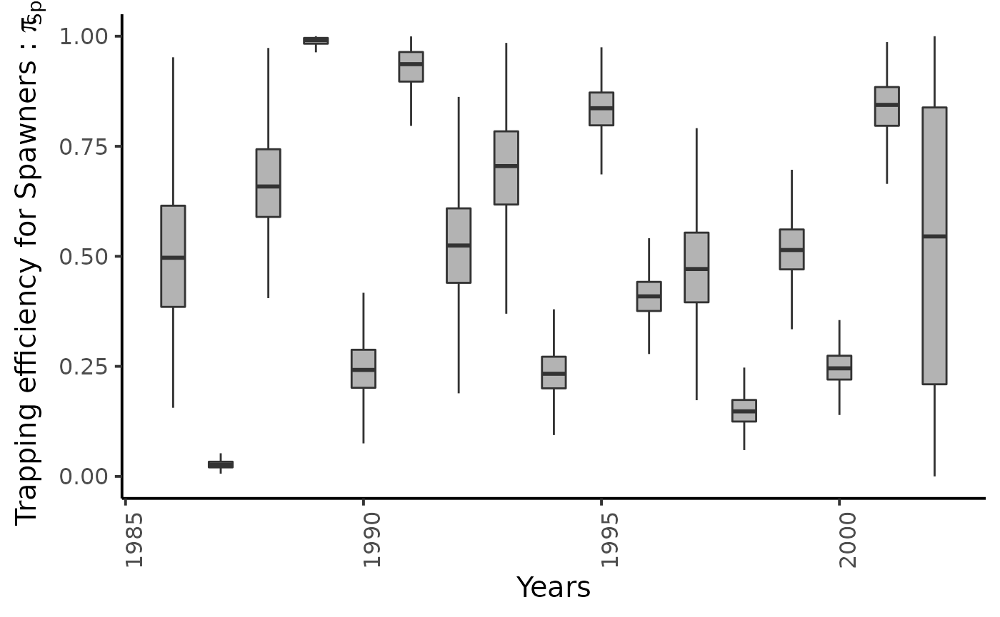
# scale_x_discrete(labels = as.character(seq(1984, 1984+15)),
# guide = guide_axis(angle = 90),
# breaks = seq(1986, 1986+15)) +
# theme_classic(base_size = 15L)
dfw %>%
select(starts_with("pi_Sp2.")) %>%
pivot_longer(cols = everything()) %>%
mutate(name = as_factor(str_sub(name, 4))) %>%
ggplot(aes(group = name, y = value, x = as.integer(name) + 1985)) +
geom_boxplot(outlier.shape = NA, width = .5, fill = "gray70") +
xlab("Years") + ylab (bquote(paste("Trapping efficiency for Spawners : ", pi[Sp2]))) +
ylim(c(0,1)) +
plot_theme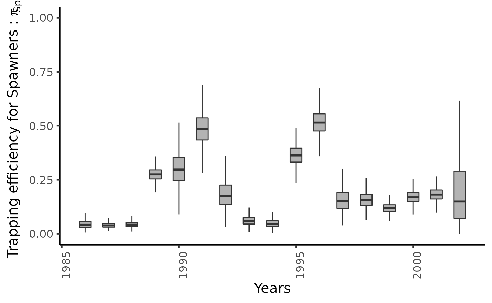
# scale_x_discrete(labels = as.character(seq(1984, 1984+15)),
# guide = guide_axis(angle = 90),
# breaks = seq(1986, 1986+15)) +
# theme_classic(base_size = 15L)
name_years <- as.character(seq(1986, 1986+15))
dfw %>%
select(starts_with("theta_Sm1.")) %>%
pivot_longer(cols = everything()) %>%
mutate(name = as_factor(str_sub(name, 4))) %>%
ggplot(aes(group = name, y = value, x = as.integer(name) + 1985)) +
geom_boxplot(outlier.shape = NA, width = .5, fill = "gray70") +
xlab("Years") + ylab ("Probability to smolitify") +
ylim(c(0,1)) +
plot_theme
# scale_x_discrete(labels = name_years,
# guide = guide_axis(angle = 90),
# breaks = seq(1986, 1986+15)) +
# theme_classic(base_size = 15L)
dfw %>%
select(starts_with("ss11.")) %>%
pivot_longer(cols = everything()) %>%
mutate(name = as_factor(str_sub(name, 4))) %>%
ggplot(aes(group = name, y = value, x = as.integer(name) + 1985)) +
geom_boxplot(outlier.shape = NA, width = .5, fill = "gray70") +
xlab("Years") + ylab ("1+ Post-smolts survival rate") +
ylim(c(0,1)) +
plot_theme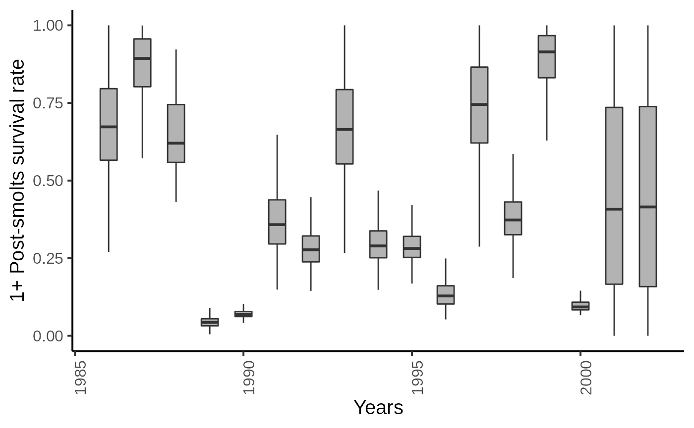
# scale_x_discrete(labels = as.character(seq(1984, 1984+17)),
# guide = guide_axis(angle = 90),
# breaks = seq(1984, 1984+17)) +
# theme_classic(base_size = 15L)
dfw %>%
select(starts_with("Sp11.")) %>%
pivot_longer(cols = everything()) %>%
mutate(name = as_factor(str_sub(name, 4))) %>%
ggplot(aes(group = name, y = value, x = as.integer(name) + 1985)) +
geom_boxplot(outlier.shape = NA, width = .5, fill = "gray70") +
xlab("Years") + ylab ("Spawners (Sp11)") +
plot_theme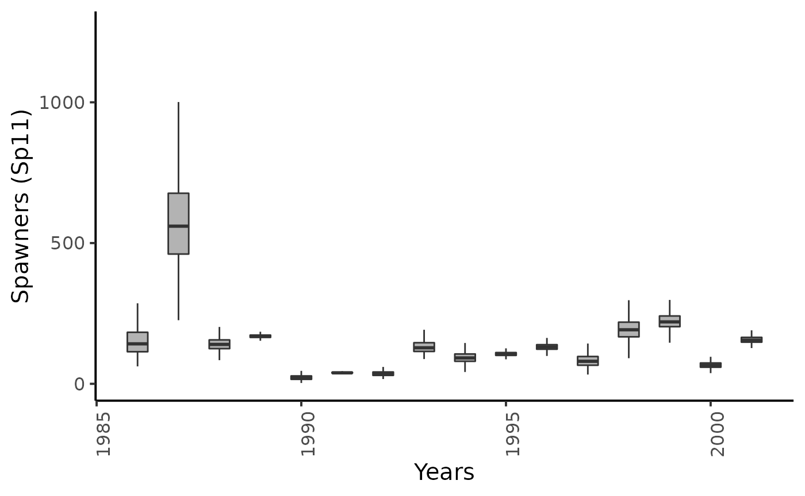
# scale_x_discrete(labels = as.character(seq(1986, 1986+15)),
# guide = guide_axis(angle = 90),
# breaks = seq(1986, 1986+15)) +
# theme_classic(base_size = 15L)
dfw %>%
select(starts_with("Sm1.")) %>%
pivot_longer(cols = everything()) %>%
mutate(name = as_factor(str_sub(name, 4))) %>%
ggplot(aes(group = name, y = value, x = as.integer(name) + 1985)) +
geom_boxplot(outlier.shape = NA, width = .5, fill = "gray70") +
xlab("Years") + ylab ("Smolts (Sm1)") +
plot_theme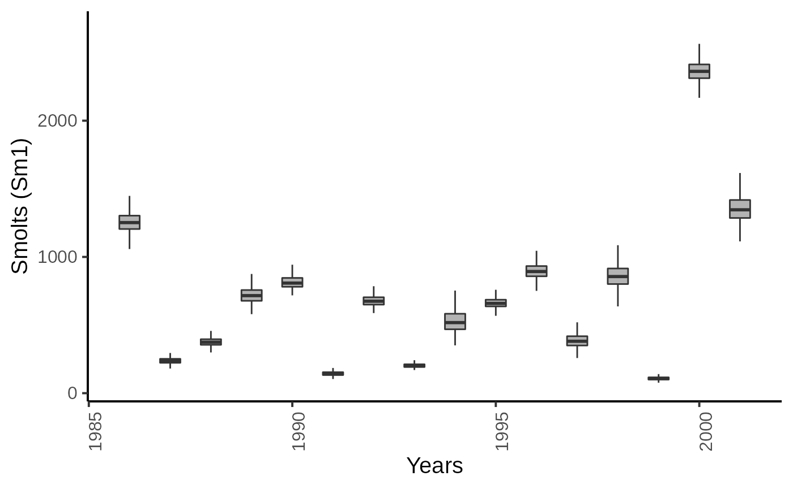
# scale_x_discrete(labels = as.character(seq(1986, 1986+15)),
# guide = guide_axis(angle = 90),
# breaks = seq(1986, 1986+15)) +
# theme_classic(base_size = 15L)